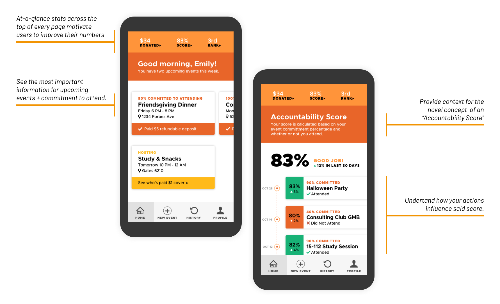
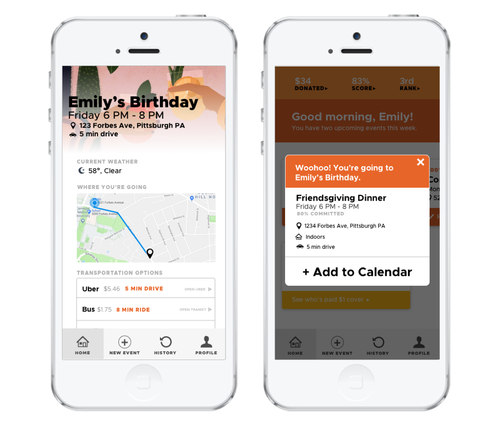

Fall 2018 • Senior Capstone
RSVP'd: the attendance app

Our solution was a mobile app: RSVP'd, which aims to solve this problem by providing predictability, motivation, and accountability. I designed the screens, and the team built out the MVP with Proto.IO, which allowed us to capture user input and display it.
I worked on this project through my senior Information Systems capstone class. This class focused on solving real-world problems with innovative technology solutions. Throughout the semester, practitioners from Deloitte Consulting mentored the teams and provided feedback. At the end of the semester, each team presented their project to a panel of IS faculty and Deloitte mentors; of the 15+ teams, our team was awarded overall Best User Experience Design.
3 months
My teammates were two other IS seniors. I was the lead designer.
User Research, Data Analysis, Affinity Mapping, Product Visioning, User Stories, Usability Testing, Wireframing, Prototyping, Presenting
Sketch, Adobe InDesign, Proto.IO, PowerPoint
Best User Experience Design - Innovation in Information Systems Class
Quantitative - surveys, qualitative - user interviews
Affinity mapping, product visioning, project proposal, user flows + stories
Wireframes, prototype, usability testing
Final presentation
fail to keep an appointment or fulfill a commitment, especially with little or no advance notice. "A real friend won't ever flake on you."
Friends flake. Group hangouts, club meetings, large events - you name it, people will flake. I don't blame them - everyone has their reason. Often, we don't think past our own needs to those it impacts most: the event organizers.
When folks who RSVP 'yes' don't show up, event organizers lose resources, time, and money.
With RSVP'd, a mobile event management platform, people are motivated to attend events they commit to because the app holds them accountable. This provides event organizers an accurate headcount of attendees.
The first part of our research phase was dedicated to collecting quantitative data through a survey, to which nearly 40 people responded.
The survey results helped us get a pulse on our initial target audience: college students. Primarily, it helped us validate that the problem exists. Most people only attend 70-80% of the events they commit to:

Second, the survey also told us that the solution we develop should focus on motivating people to attend, not punishing them for failing to.

We spent the second half of discovery interviewing users to gain qualitative insight.
After speaking with 10+ users, I pulled out 80+ insights from interview notes and survey results. I facilitated the diagramming session and built out a detailed report that lays out our findings. These are the top-level takeaways from our research phase:
Armed with these guiding insights, the team was able to develop a product vision (below), create prioritized user stories, and write a formal project proposal.

As the lead designer, my role was to create wireframes and visual comps to hand off to my teammates to develop with Proto.io. Once we had a functional prototype, we conducted usability testing as a team. We went through 3 rounds of this cycle, conducted testing with a total of 25 users, and tracked our progress by capturing the System Usability Score for each version of the app.
RSVP'd introduces the concept of an accountability score - a simple running percentage of events attended / events RSVP'd to as 'yes.'
We know from research on motivation through score and social UX strategy that gamifying elements can help motivate users, at least in the short term.
That said, we also know that users ultimately need intrinsic motivation to attend events - this comes in to play during the attendee invitation flow.
The invitation flow below contains several intentional barriers, designed to help the user decide if they truly want to attend this event - and make a decision that sticks.

We cover the basics first: users see the event information and if it fits in to their schedule. Most users already use some form of technology (primarily calendar apps) to keep track of their events. RSVP'd makes this even easier by integrating that calendar directly in to the invitation flow.
Next, users see a personalized checklist of their event preferences. Personal values dictate priorities - everyone has event preferences; by capturing these through the user profile and reminding the user of them, we hope it will make their decision easier.
Last, users select their commitment level, and pay a small refundable deposit. If they attend, they get the money back. If they don't attend, the money goes to a charity that the organizer has selected. We found through our research that a few dollars isn't a big enough barrier to prevent most people from RSVPing all together, but it is enough that someone will think twice about flaking last minute.
Among our users, an overwhelming barrier to attend events is a lack of convenience. Is it cold out? Do I have to walk far to get there?
We combat these qualms by embedding transparency into the event's convenience throughout the attendee experience. Users see how far away the event is from their home upfront so their expectations are set from the start. When it's time to head to the event, users get a push notification reminder, which provides an aggregated list of their transportation options, sorted by their preferences (set in the user profile).
Many users also simply forget about events they've committed to until the day of, and then realize they've made other plans. Our solution to that problem is to prompt the user to add their events to their calendars and send follow-up push notifications. This way, "I forgot" can no longer be an excuse.
When organizing an event, people often need money - to buy food or rent a space, for example. It becomes vital, then, to know roughly how many people will attend so organizers can plan (and spend) accordingly.
RSVP'd takes these needs into account by giving the organizer three options (below) to fund their event. However, when money and relationships intertwine, things can get tricky. There must be some level of mutual trust between attendees and organizers in order for attendees to feel comfortable putting down a deposit for an event. To address this concern, we divert unused money to charities. If guests flake, their deposit doesn't go in to the organizer's pocket - it goes to charity.
Lastly, organizers see am attendance prediction based on the guest's response and the guest's accountability score. Combined, those two factors make this prediction a much more reputable source of truth compared to any traditional RSVP platform.


By our last round of testing, we found that most users were on board with the app, saw its value, and would actually use it. However, some users still voiced concerns about committing with a refundable deposit.
We address that concern by leaving the money decision up to the event planner - they know their attendees best. We also leave it up to users to decide how they'd use this app. Some testers said they would only want to use it for larger, formal events, while others were on board for almost any event. The beauty of RSVP'd is that it scales to users' needs and preferences.
Testers all agreed that RSVP'd promotes accountability, makes attending events easier, and is easy to use.
"I’m doing pretty well ... [the app] makes me want to have a better score and be more accountable."
"I clicked through the whole invite process and it's pretty easy to understand. I chose the 'maybe' option and I liked the probability measure! It definitely will help event organizers better plan their events."
"[The transportation page is a] very helpful feature. I would use this app just for this info. It saves a lot of trouble to enter the address into a map or Uber."